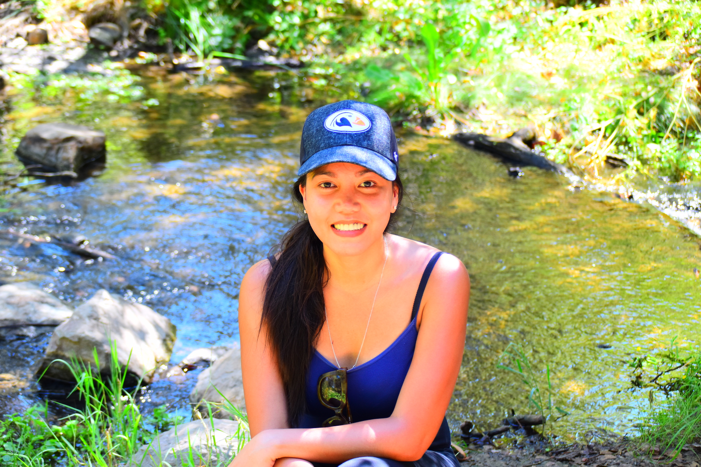

<div class="container">
    <div class="row indexSection">
        <div class="col-md-12">
            <div class="row pad1">
                <div class="col-md-12">
                    <h2>About me</h2>
                    <p class="line-border"></p>
                </div>
            </div>
            <div class="row aboutMe">
                <div class="col-md-5">
                    
                </div>
                <div class="col-md-7 pad">
                    <p>
                        My name is Cara Crotty. I was born and raised in the Philippines. Outdoor activities including
                        hiking and nature photography are some of things I enjoy. I also enjoy traveling with my
                        husband. In my spare time, I like learning to program, cooking, baking and taking care of my
                        plants.
                    </p>
                    <p>
                        I attended public schools and received a Bachelor of Science degree in Computer Engineering from
                        Polytechnic University of the Philippines. After college, I worked in various call center
                        providing technical support for a few years. Then, I had a role as a programmer developing
                        backend systems for a startup focused on products for the travel industry.
                    </p>
                </div>
            </div>
        </div>
    </div>
</div>